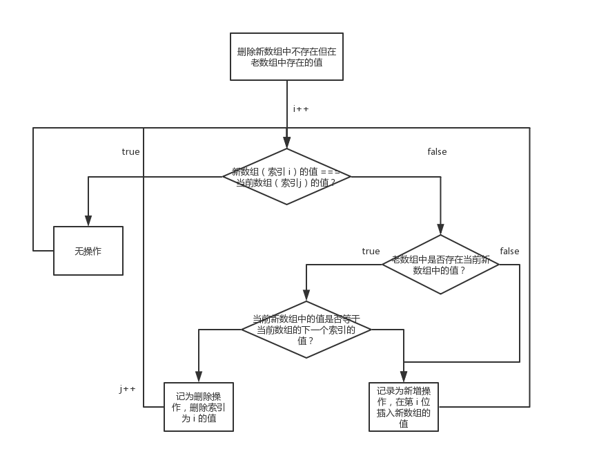

深入理解 Virtual DOM
为什么说浏览器的 DOM 操作很慢？
- DOM 引擎、JS 引擎 相互独立，但又工作在同一线程（主线程）。
- JS 代码调用 DOM API 必须 挂起 JS 引擎、转换传入参数数据、激活 DOM 引擎，DOM 重绘后再转换可能有的返回值，最后激活 JS 引擎并继续执行。
- 若有频繁的 DOM API 调用，且浏览器厂商不做“批量处理”优化，引擎间切换的单位代价将迅速积累。
- 若其中有强制重绘的 DOM API 调用，不但厂商费尽心机做的“批量处理”优化被中断，重新计算布局、重新绘制图像会引起更大的性能消耗所以，降低引擎切换频率、减小 DOM 变更规模才是评判各种 DOM 性能优化方案的关键！
所以，降低引擎切换频率、减小 DOM 变更规模才是评判各种 DOM 性能优化方案的关键！
作者：水歌 链接：https://www.zhihu.com/question/67479886/answer/283723030 来源：知乎 著作权归作者所有。商业转载请联系作者获得授权，非商业转载请注明出处。
为什么要使用 Virtual DOM？
- 通过 DOM-diff 的算法减少浏览器重绘。
- 作为中间层实现跨平台开发。
- MVVM 模式的核心，数据驱动视图更新。
什么是 DOM-diff 算法
React 的编辑距离算法
两个需要被比较的数组的数据结构为 object[]，在指定被比较的属性（React 中 即为 key）的情况下，逻辑如下（参考代码）：
